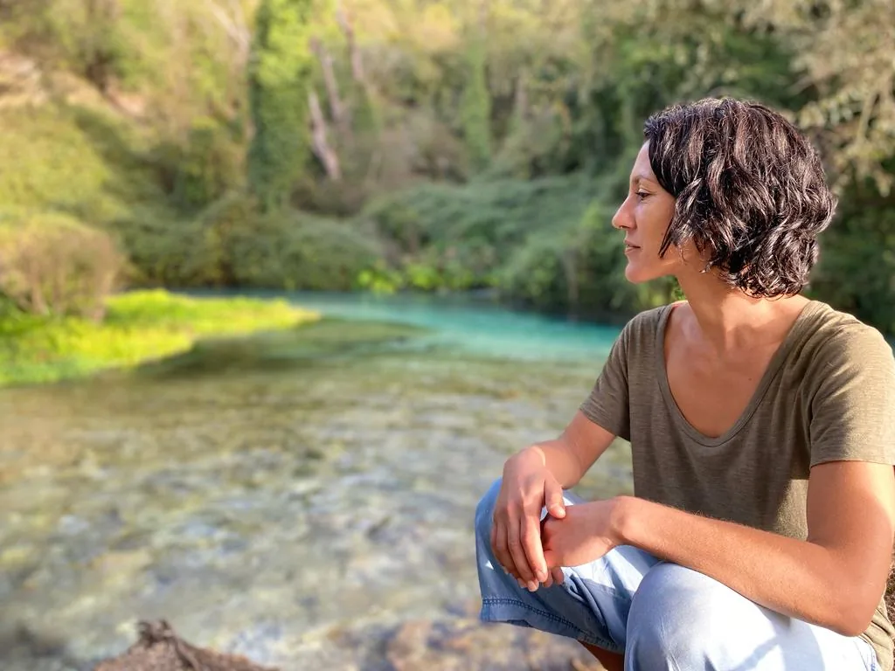
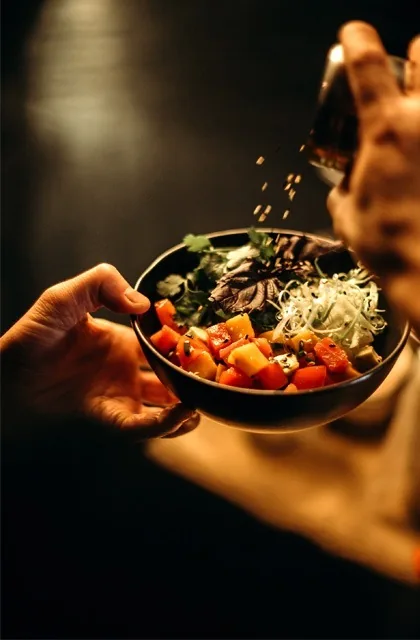

Nutrición Consciente
Hayat Lanouar
Mi pasión es la nutrición y el estilo de vida, y mi propósito ayudarte a que encuentres el equilibrio en ambas y lo integres en tu día a día.
MI CAMINO
Mi pasión es la nutrición y el estilo de vida, y mi propósito ayudarte a que encuentres el equilibrio en ambos y lo integres en tu día a día.
Opté por formarme con enfoque holístico para tener una visión amplia y un tratamiento integral de las patologías en consulta, sin caer en un enfoque reduccionista de dieta. La alimentación no solo nutre tu cuerpo, sino que también envía información vital a tus células, siendo uno de los pilares fundamentales para mantener una óptima salud. Es crucial que esta alimentación sea personalizada y adaptada a tus necesidades individuales, dentro de un estilo de vida saludable que abarque otros aspectos esenciales como el bienestar emocional y social.
En mi consulta, adopto un enfoque integral, teniendo en cuenta otras variables que influyen en tu bienestar integral, cómo relaciones interpersonales, la gestión emocional y del estrés, la calidad del sueño, el movimiento funcional y adaptado, así como los ritmos biológicos.

Juntos, trabajaremos para mejorar todos estos aspectos de tu vida, creando un plan personalizado que te ayude a alcanzar un estado óptimo de salud.

“Lo que para uno es alimento, para otro puede ser veneno”.
SERVICIOS
EDUCACIÓN NUTRICIONAL:
Cada etapa de la vida tiene sus propias necesidades nutricionales específicas. Una dieta equilibrada y variada que satisfaga estas necesidades es fundamental para la salud y el bienestar. En estas sesiones podrás resolver dudas y obtener información para mejorar tu alimentación y estilo de vida de una manera sencilla.
Precio: 35 € con una duración de 1 hora.
DIETOTERAPIA:
Abordamos la causa raíz de los síntomas de manera integral, trabajando con una nutrición adaptada desde un enfoque integrativo y un acompañamiento respetuoso.
– Hormonales: acné, síndrome premenstrual, síndrome de ovario poliquístico, infertilidad, endometriosis, menopausia, hiperestrogenismo e hiperandrogenismo.
– Metabólicos: diabetes tipo2, hipertensión, resistencia a la insulina, sobrepeso, hígado graso, colesterol.
– Digestivos: gastritis, reflujo, disbiosis (SIBO,IMO,LIBO…), SII, EII, hinchazón, gases, dolor abdominal, intolerancias alimentarias, alergias.
– Autoinmunes: Diabetes tipo1, Celiaquía, Hashimoto, Artritis Reumatoide, Esclerosis Múltiple, Crohn, Lupus, Psoriasis…
– Neurológicos y oncológicos.
PSICONUTRICIÓN:
Abordaremos los factores emocionales, la raíz de esa relación con la alimentación y con el cuerpo, espejo de la relación que mantenemos con nosotrxs mismxs:
– Ansiedad por la comida y atracones con pérdida de control;
– Dietas crónicas y autoimagen;
– TCA´s: ortorexia, vigorexia, bulimia, anorexia.
Precio: La primera consulta (dietoterapia y psiconutrición) cuesta 70€ tiene una duración de 1 hora y 45′.
Incluye: cuestionario previo consulta, consulta, pauta integral y su explicación.
Las consultas de revisión cuestan 50€ y tienen una duración de 1 hora.
Mucha de la información que nos llega sobre alimentación es errónea y va en contra de nuestra propia naturaleza.
Hayat Lanouar
Nutrición Consciente
Educación nutricional, dietoterapia y psiconutrición. 644 09 89 99